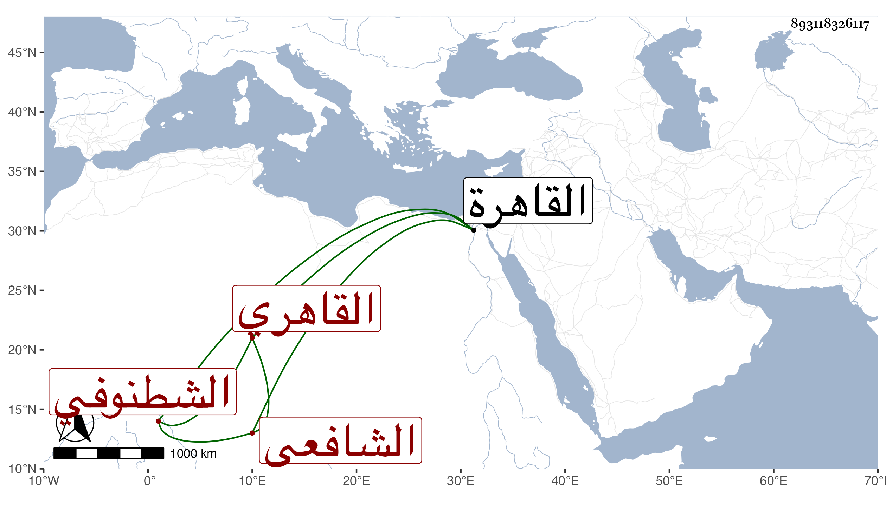

0902Sakhawi.DawLamic.ITO20230111-ara1.EIS1600.893118326117
Biography ID: 893118326117
205
أحمد بن محمد بن إبراهيم بن أبي بكر وقيل عبد الله بدل أبي بكر وكأن أبا بكر كنية عبد الله الشهاب بن الشمس الشطنوفي الأصل القاهري الشافعي الآتي أبوه . ولد كما بخط أبيه في سنة سبع وتسعين بالقاهرة ونشأ بها فحفظ القرآن وكتبا واشتغل يسيرا وأخذ عن والده وغيره وترافق هو والزين السندبيسي على أبيه في شرح التسهيل لابن أم قاسم ولكنه لم يتميز ، وسمع على ابن الكويك والكمال بن خير والجمال عبد الله بن فضل الله والشمسين الشامي وابن البيطار والكلوتاتي والفوي والولي العراقي وطائفة وأجاز له جماعة ، وتنزل في الجهات كالمؤيدية وباشر أوقاف الحرمين بل وتدريس الحديث بالشيخونية تلقاه عن والده واختص بشيخنا وبولده وعظمت محبته فيهما وكذا كان من خواص الزين البوتيجي ومحبيه ، وقد زوج المناوي ولده زين العابدين بابنته ، سمعت عليه كتاب الثمانين للأجراء بقراءة التقي القلقشندي برباط الآثار الشريفة . وكان خيرا دينا متواضعا وقورا كثير التودد حسن العشرة لين الجانب . مات في سادس عشري صفر سنة خمس وخمسين ودفن من الغد واستقر بعده في الشيخونية الفخر عثمان المقسي نيابة واستقلالا .
